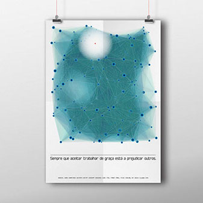
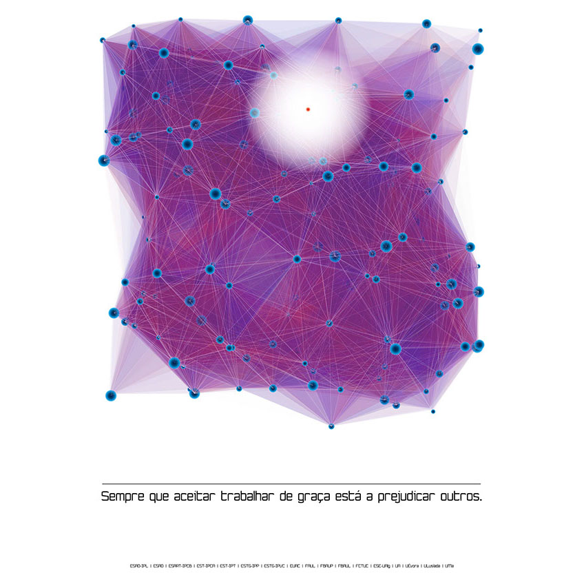
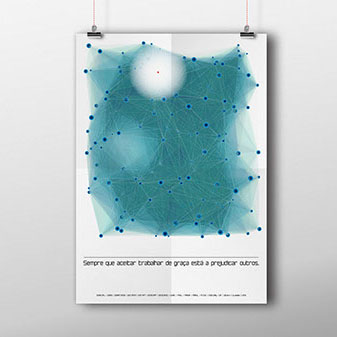
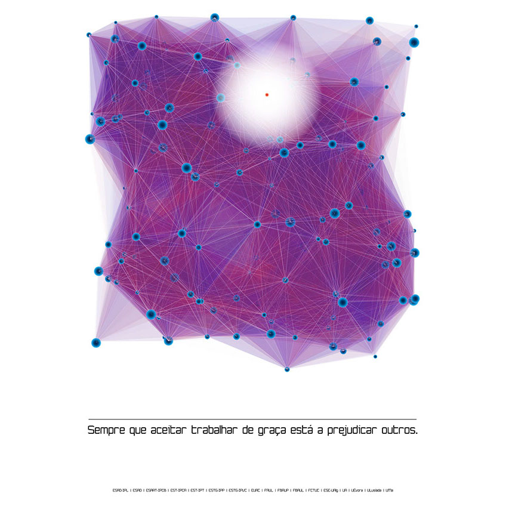
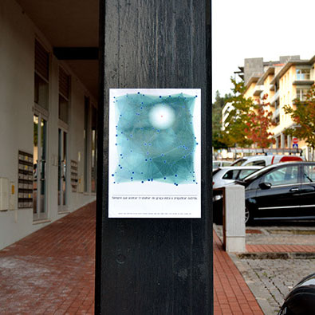
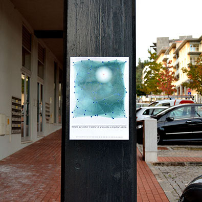

Generated Poster - Design e Responsabilidade
Este projeto foi desenvolvido na cadeira de Oficina de Design I, na Universidade de Coimbra. O objetivo consistiu no desenvolvimento de um cartaz que tivesse a frase "Sempre que aceitar trabalhar de graça está a prejudicar outros", tendo em conta que deveria ser implementada a componente tecnológica no processo ou produto final (da arte digital ao design generativo, de interface e/ou de interação). O conceito passa pela interpretação das redes através de elementos abstratos, que neste caso consistiu no uso de circulos (trabalhadores) ligados entre si através de linhas (conetores), na qual é posicionado um círculo que interrompe a rede, de forma a ir de encontro com o significado da frase. Para o desenvolvimento, o software utilizado foi o "Processing" (Java), no qual foi desenvolvido uma aplicação que permite gerar cartazes diferentes sempre que é executado, mudando assim a cor e a posição dos elementos presentes.

 





 
